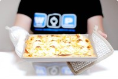
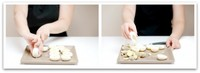
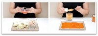

Hoy tengo un regalo para un peque de Durango, unos huevos rellenos con tomate, atún y bechamel que he bautizado como Huevos WOP. Seguro que le encantan. Es mi aportación, mi gratino de arena para un proyecto llamado “Walk on project”.
Jontxu fue diagnosticado a los 6 años -en 2008- de una enfermedad degenerativa que le llevaba a la muerte. Sus padres consiguieron mantenerle con vida gracias a un transplante de médula, pero evidentemente su enfermedad avanza.
“Walk on projet” es la ONG que han creado Mikel Rentería y Mentxu, para recaudar fondos y que así se puedan estudiar enfermedades raras como esta Adrenoleucodistrofia de su hijo. Este mes de Febrero, han donado ya 100.000 euros para la investigación y la búsqueda de terapias alternativas. Están consiguiendo muchas cosas y están teniendo un apoyo increíble y siguen luchando, esperando, cantando y “siguen pintando”.
WOP es un movimiento que no podemos parar, es positivo, optimista y vital, por eso quería que lo conociéseis, que habléis de el a vuestros amigos, a los que tengan hijos en la misma situación y a los que tenéis la suerte de que vuestros hijos, sobrinos, estén sanos. La actitud WOP es fácil de seguir, podéis colaborar comprando camisetas, el disco de Mikel, donando unos euros o simplemente ayudando a que otros lo conozcan. Pasa la voz.
Un beso enorme chicos! Con todo mi cariño
“Hasta el infinito y más allá”
Huevos rellenos con tomate y bechamel
Ingredientes:
500ml de agua para cocer los huevos
8 huevos, la cantidad es opcional según el nº de comensales.
2 latas de atún en aceite de oliva virgen extra, escurridos
300gr de tomate frito casero o envasado
Queso para gratinar al gusto
Bechamel de cobertura:
25gr de aceite de oliva virgen extra
70gr de harina
400gr de leche entera
sal al gusto
Preparación:
1.- Vamos a cocer los huevos en el vaso de la thermomix, para ello llena el vaso con 500ml de agua, pon dentro el cestillo y pon los 8 huevos dentro. Programa 15 minutos, Varoma y velocidad 1. Cuando la Thermomix pite “ya terminé, ya terminé”, estarán listos. Espera a que enfríen antes de continuar. :D
2.- Abre los huevos por la mitad y separa las claras de las yemas. Reserva las claras.

3.- Vierte en el vaso las yemas, las dos latas de atún con el aceite escurrido y 170gr de tomate frito. Mezcla 5 segundos en velocidad 2 y medio. Con esta mezcla ya puedes rellenar los huevos. La consistencia la puedes poner a tu gusto, con más o menos tomate, como prefieras.

4.- Pon sobre una fuente el tomate restante y ve colocando los huevos rellenos sobre la misma como se muestra en la foto.
5.-Ahora haremos la Bechamel, para ello pon el aceite en el vaso sin lavar (pero bien rebañado con una lengua de goma) y programa 2 minutos, Varoma, velocidad 2.
6.- Añade la harina y rehoga 1 minuto, 100º, velocidad 2.
7.- Vierte la leche y una pizca de sal y programa 7 minutos, Varoma, velocidad 4. Echa sobre los huevos.
8.- Pon el queso para gratinar sobre los huevos y la bechamel. Gratina en el horno hasta que esté dorado (10-15 minutos) y sirve caliente. Perfecto y deliciosoooo.
Gracias a Inés de “Aceite y chocolate” por darme a conocer este proyecto.